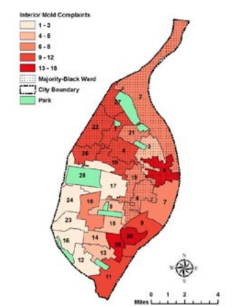

In 2011, St. Louis was named one of the worst major cities in the US for patients with sensitization(chronic non-allergic response) to mold.
However, this issue doesn't effect all St. Louisans equally, as 70% of St. Louis wards that had 6 or more interior mold complaints in 2018 are majority black. This is because mold is expensive to remove and there aren't any standards that keep mold exposure from reaching a certain level. Many landlords also refuse to address issues with mold due to the lack of enforced standards. In addition, over 20% of St. Louis City's population live under the federal poverty level, and a majority live in rental housing, which means that many lack the money and means to address mold exposure or to force their landlords to.
Can cause/worsen:
This map shows the number of mold complaints in each ward, showing that most wards with the most amount of complaints are majority-black.
